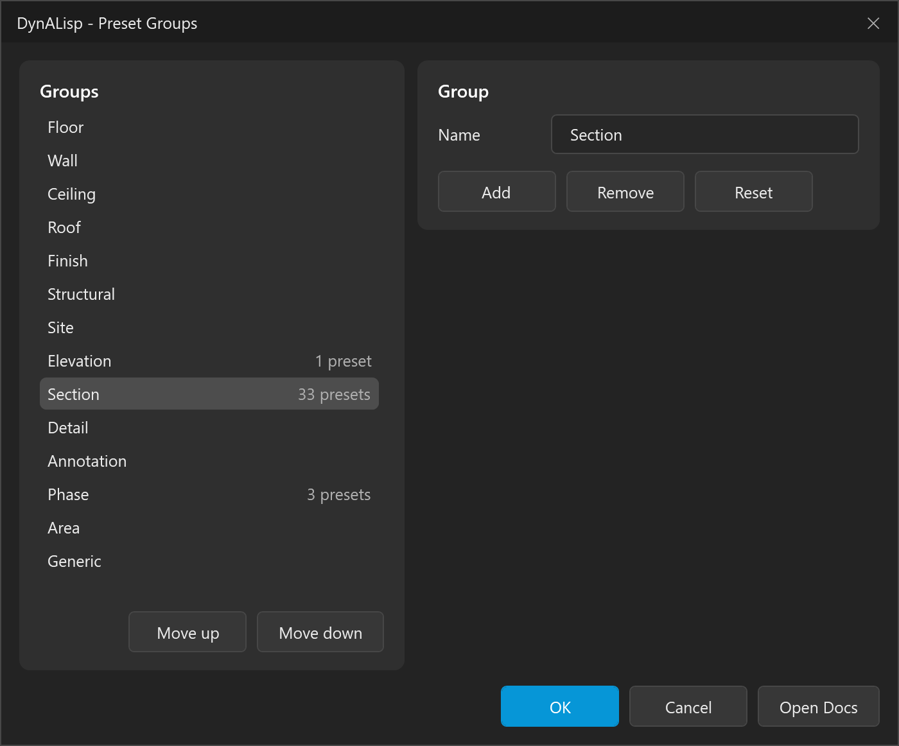

Preset Groups
Sort your presets and materials into groups: Wall, Section, Phase for the presets, Masonry, Wood, Insulation for the materials.


How To Use
- Click the square button beside a Group list in Quick Draw, Quick Shape, Assembly Presets, Hatch Presets or Materials.
- Add, rename, Remove or move the groups.
- Click OK: a group renamed is renamed everywhere.
Reset gives back the default groups.